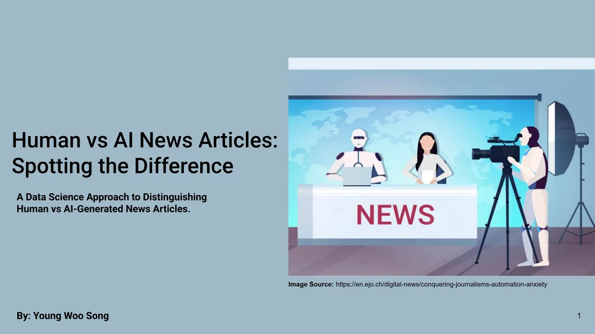

Stylometric features
Word count, character count, and word density engineered from article text and titles after tokenization, stop-word removal, and stemming / lemmatization.
Human vs. AI news classifier
An NLP project classifying news articles as fake or true from combined True.csv and Fake.csv datasets. Text is preprocessed (tokenization, stop-word removal, stemming and lemmatization), features are engineered (word count, character count, word density, TF-IDF vectors), and sentiment is analysed with TextBlob and VADER — with Shapiro-Wilk and Mann-Whitney U tests comparing sentiment distributions between AI-generated and human-written articles. Logistic Regression, SVM, and Random Forest classifiers were then evaluated on accuracy, precision, recall, F1, and ROC AUC.
Human-written and AI-generated news read alike on the surface. The separable signal sits in measurable stylometric and statistical differences — word count, character count, word density, sentiment distribution — which have to be extracted from the text and titles before anything can classify them.
Word count, character count, and word density engineered from article text and titles after tokenization, stop-word removal, and stemming / lemmatization.
TF-IDF vectors alongside TextBlob and VADER sentiment, with Shapiro-Wilk and Mann-Whitney U tests comparing the two populations.
Logistic Regression, SVM, and Random Forest evaluated on accuracy, precision, recall, F1, and ROC AUC.
True.csv + Fake.csv merged into one DataFrame with a true/fake target.
Tokenization, stop-word removal, stemming/lemmatization on text and titles.
Word count, character count, word density from cleaned text/title.
TextBlob + VADER sentiment; Shapiro-Wilk normality test; Mann-Whitney U comparing AI vs human sentiment distributions.
TF-IDF on text and title.
Logistic Regression, SVM, Random Forest — accuracy, precision, recall, F1, ROC AUC; confusion matrices + ROC curves.
Preprocessing, EDA with feature engineering, then the classification model.
Derived from both article text and titles.
TextBlob and VADER, with Shapiro-Wilk and Mann-Whitney U hypothesis testing.
Feeding Logistic Regression, SVM, and Random Forest classifiers.
Confusion matrices, ROC curves, and classification reports.
| Model | Metrics evaluated |
|---|---|
| Logistic Regression | accuracy, precision, recall, F1, ROC AUC |
| SVM | accuracy, precision, recall, F1, ROC AUC |
| Random Forest | accuracy, precision, recall, F1, ROC AUC |
Explore the material
behind the project.
Presentations, research, and supporting material from the project repository, alongside the original project media.
Browse the published slides, including the research approach and findings.

17 cells · 12 saved charts. Read the analysis, code, and recorded results.
23 cells · 0 saved charts. Read the analysis, code, and recorded results.
48 cells · 11 saved charts. Read the analysis, code, and recorded results.
Read the project overview, setup notes, and technical documentation.
Have an idea, a challenge, or a different perspective?
I’d love to hear it.
{kind=link}